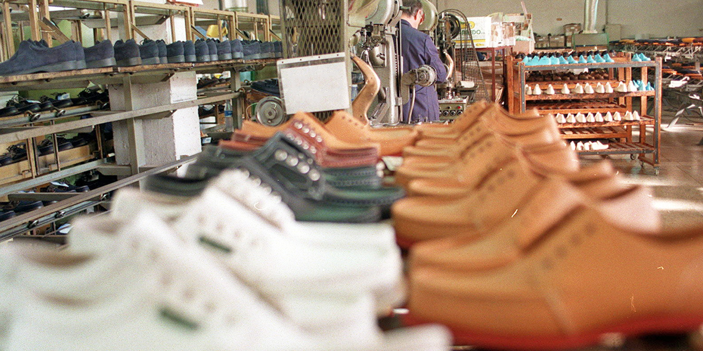
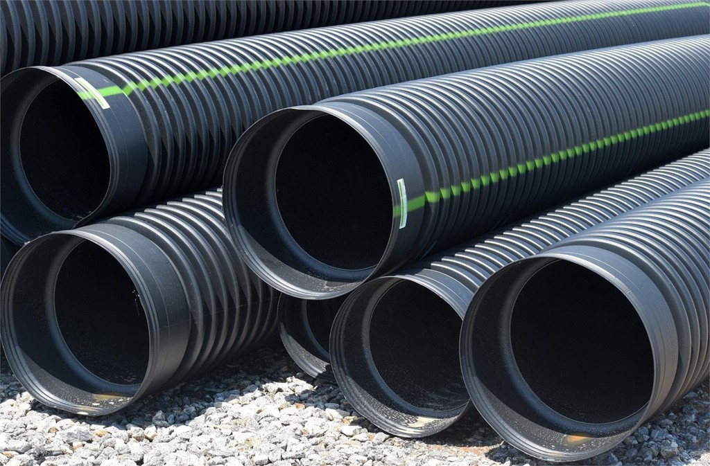

Construcción y Arquitectura
El PVC es ampliamente utilizado en la construcción y arquitectura para fabricar tuberías, ventanas, puertas, revestimientos, persianas y sistemas de canalización.
Industria Eléctrica y Electrónica
En esta industria, el PVC se utiliza para aislamiento de cables y alambres, fundas protectoras y componentes de dispositivos electrónicos debido a su capacidad dieléctrica y resistencia al fuego.

Industria del Calzado
En la fabricación de calzado el PVC se utiliza para crear materiales impermeables, flexibles y resistentes al desgaste, como suelas de zapatos, impermeables y otros productos.

Sistemas de Tuberías y Canalización
El PVC se utiliza en la fabricación de tuberías y sistemas de canalización para transporte de agua potable, drenaje y alcantarillado debido a su resistencia química, durabilidad y bajo costo.